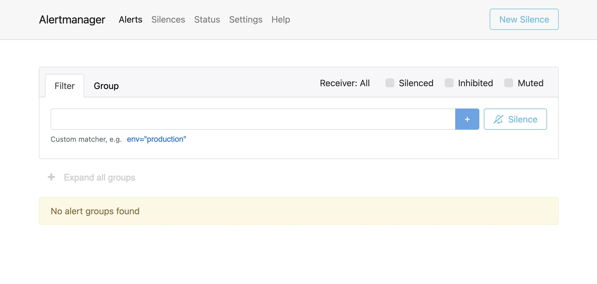
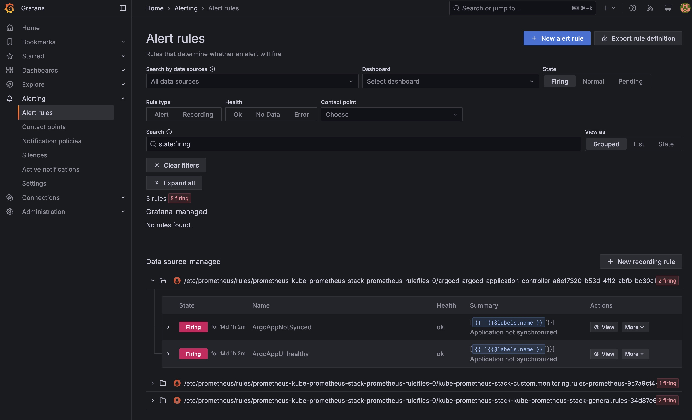
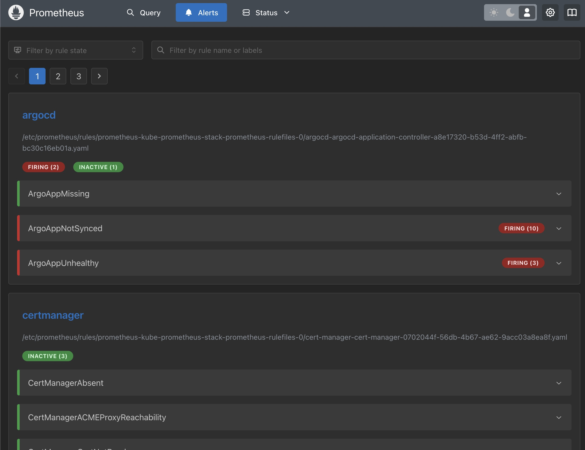

Alerts
Alerting is a core component of our observability setup, enabling proactive response to system incidents and anomalies. For alerting, we use the Prometheus Alertmanager, which is included as part of the kube-prometheus-stack Helm chart. Alertmanager handles alerts sent by Prometheus based on user-defined rules and routes them to various receivers.
It receives alerts triggered by Prometheus based on predefined rules and routes them to configurable receivers such as:
- Microsoft Teams, Slack, Rocketchat
- Webhooks
- Jira
- Opsgenie
- Pagerduty
- Victorops / Splunk On-Call
Here is an overview of how to configure the receiver: Alertmanager receiver-integration-settings
Key features:
- Grouping and deduplication of alerts
- Silencing during maintenance periods
- Routing alerts based on custom labels
This setup enables proactive monitoring and quick response to issues or outages.
Configuration via values.yaml
Alertmanager configuration is managed through the values.yaml file located in the kube-prometheus-stack directory. This file allows us to define custom receivers and routing logic.
Below is an example alertmanager.config section from the values.yaml file of the kube-prometheus-stack. It demonstrates an advanced routing setup that includes Microsoft Teams (v2), a watchdog receiver (e.g. for UptimeRobot) and a silenced route for informational alerts.
alertmanager:
config:
route:
receiver: msteams-notifications # Default receiver if no route matches
routes:
# 1. Silence all alerts named "InfoInhibitor"
- receiver: "null"
matchers:
- alertname =~ "InfoInhibitor"
# 2. Route "Watchdog" alerts to UptimeRobot with a short repeat interval
- receiver: uptimerobot
repeat_interval: 1m
matchers:
- alertname =~ "Watchdog"
# 3. Route all alerts with severity "warning" or "critical" to Microsoft Teams
- receiver: 'msteams-notifications'
matchers:
- severity =~ "warning|critical"
continue: true # Continue to evaluate other routes after this one
receivers:
# Microsoft Teams v2 receiver using `msteamsv2_configs`
- name: 'msteams-notifications'
msteamsv2_configs:
- send_resolved: true
webhook_url: <your-msteams-webhook-url> # Replace with your real MS Teams webhook
# Watchdog/Uptime monitoring receiver
- name: uptimerobot
webhook_configs:
- url: <your-uptimerobot-webhook-url> # Replace with your real UptimeRobot endpoint
# Null receiver to discard matched alerts
- name: "null"
# Optional: Use custom templates for consistent alert formatting
templates:
- /etc/alertmanager/config/*.tmpl
Alert Visualization
In addition to automated alert routing and notification, our stack provides visual interfaces for viewing and managing alerts.
Alertmanager UI
The Alertmanager component includes its own web interface, accessible via an Ingress at:
https://<customer-domain>/alertmanager
In this interface, active alerts can be viewed, silenced, and grouped. It also shows alert labels, status, and routing details.

Note: Access to the Alertmanager UI can be secured through your ingress controller (e.g., via authentication middleware).
Alerts in Grafana
Grafana also includes a built-in alerting dashboard where both legacy Prometheus alerts and Grafana-managed alerts can be viewed. This allows teams to:
- Browse all firing or pending alerts
- Inspect alert conditions and rules
- Silence or acknowledge alerts
- Track alert history and evaluation results
You can access this via Alerting > Alert Rules in the Grafana sidebar.
You can find more about Grafana in the Dashboards chapter.

Tip: The unified alerting system in Grafana supports rule grouping, templating, and annotations.
Alerts in the Prometheus UI
Prometheus itself also includes a simple interface for viewing alert rules and their current state.
This can be accessed at:
https://<customer-domain>/prometheus/alerts
Here, you can inspect all configured alerting rules, including:
- Current state (inactive, pending, firing)
- Evaluation expressions (PromQL)
- Labels and annotations
This view is especially useful for debugging rule evaluations directly at the source.
